第一場次：18:00-19:00；第二場次：19:30-20:30
17:30起30分鐘內、19:00起30分鐘內

月桃葉/林投葉手編提燈
用葉片也能製作出精美的提燈？這個想像可能存在於許多民眾的童年回憶，卻也可能讓不少人感到陌生與疑惑。這次在2020桃園燈會手作提燈館，將讓民眾有機會利用葉片製作出玲瓏小巧的提燈。課程中主要使用的材料有兩種，一種是月桃葉，另一種是林投葉。授課老師會為各位介紹葉片的差異，示範如何透過交織的方式讓葉片形成立體堅固的提燈。於提燈中塞入LED燈，取一根樹枝綁上細線牽起提燈，充滿濃郁草葉香氣的提燈就把玩於手中！
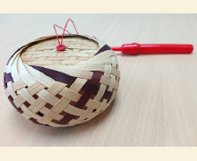
DIY手作竹編燈籠
隨處可見的竹簍、祭祀用的水果提籃、居家使用的童玩擺飾等，使用竹編技藝製作而成的產品充斥在我們的日常生活。只要有心，利用竹編技巧隨時可作出令人驚豔的手工藝品。透過這次在2020桃園燈會手作提燈館的竹編課程，將讓參與民眾共同體驗竹編工藝的神奇魅力，學會實用的竹編技巧！親手製作出來的，將不僅是一盞樸實的提燈，也可以是獨具特色的藝術精品！
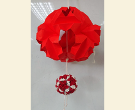
紅包燈籠
過年時節人人都用紅包袋來傳遞祝福與喜悅，這個過年期間的重點小物，沒想到也有機會變身成為精巧的手作提燈！這次在2020桃園燈會手作提燈館，將有機會利用紅包袋製作出極具個人特色的精巧燈籠。將紅包袋透過裁剪、拼貼與組裝，製作出來的燈籠不僅符合年節氛圍，也兼具環保的美意。覺得收到的紅包樣式都了無新意嗎？來參與課程，就可以作出專屬酷炫的紅包樣式，送禮自用都是吸睛的焦點！
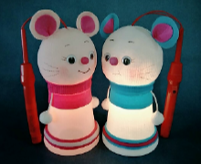
摺紙燈籠
單調的紙張透過反覆的翻裡摺外製作出動物、花卉與生活器物，應該是每個人孩提時期都有過的回憶與感動。這次在2020桃園燈會手作提燈館，將可以再次體會摺紙的興奮與感動。每位參與的民眾都可以獲得一套特色造型的模板，經由各式摺法與接合組裝，就能形成精巧可愛的摺紙燈籠。在這次的課程中，將可以體驗較為繁複的製作程序，所製作出來的燈籠，必定更加具有特色並值得反覆玩味！
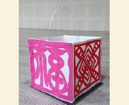
剪紙燈籠
剪紙是中國傳統技藝的一環，古人也時常透過剪紙來傳達心願，不過由於手工相對繁瑣，已逐漸不受年輕人青睞。這次在2020桃園燈會手作提燈館，由專業的老師指導，利用鏤空剪紙的工法，即便不是天生巧手，也能輕鬆製成一盞盞散發暖黃色光的古典燈籠。想要體驗中國的古典美學？想要體驗剪紙後的驚喜與成就感？那就絕對不能錯過這次的機會！
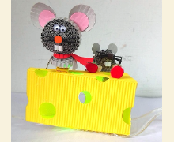
捲紙燈籠
將紙一圈圈的捲起，反覆重疊多個紙捲，看似平凡的紙捲，也能變身成為精美的藝術品。這次在2020桃園燈會手作提燈館，便有機會體驗這種特殊的紙製工藝，不需要天生有一雙巧手，只要有耐心，跟隨著老師的教導，人人都可以用一圈圈的紙捲創造出立體堅固的提燈。層層重疊的紙捲緊密連接在一起，製成的燈籠成品，不僅精緻，更是成就感的來源，絕對值得參與者細細玩味。
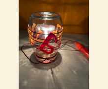
玻璃罐燈籠
玻璃罐是居家常用的收納小物，很多人會用玻璃罐收藏珍愛的飾品，不過將玻璃罐製作成綻放光明的燈籠，絕對是超凡的創意！這次在2020桃園燈會手作提燈館，將有機會將一個個玻璃罐經過精巧的加工，讓玻璃罐成為綻放光芒的媒介。只要來體驗課程，就可以發現，玻璃罐不僅可以收藏擁有的珍愛，也可以透過它，許下新年的期許與展望！
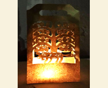
牛皮紙袋燈籠
牛皮紙袋是隨手可得的資源，在強調「限塑」概念的當前社會，很多店家都會改以使用紙袋盛裝商品。這次在2020桃園燈會手作提燈館，將有機會利用這些牛皮紙袋，經由剪裁加工後，製成一盞盞生動有趣的燈籠。可以任由創意奔馳在牛皮紙袋，只要有心，人人都可以利用牛皮紙袋製作出獨一無二，散發溫暖光芒的燈籠！
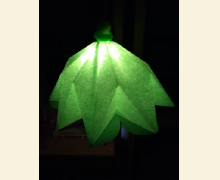
彩球花燈燈籠
彩球在華人文化中與喜慶的概念相互連結。如果能利用隨手可得的紙品製作出精巧的彩球，想必是相當討喜的手工技能。這次在2020桃園燈會手作提燈館，將有機會利用成本相對低廉的色紙、報紙與傳單等，讓參與者製成一顆顆精緻小巧的彩球，如果有心，也可以依照個人喜好任意加工，這樣製成的彩球花燈將更為華麗。隨手可得的紙張，都可以製成精美彩球，歡迎有興趣的民眾一同來玩味！
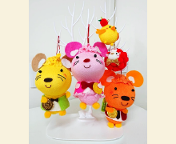
襪子娃娃燈籠
襪子是民眾隨手可得的生活物件，一只簡單的襪子經過巧手，也能搖身一變成為精美的燈籠。這次在2020桃園燈會手作提燈館，將讓參與的民眾發揮巧思，透過雙手，結合紙板素材與美工材料，將一只只樸實無華的襪子，透過創意加工，製成一盞盞承載溫馨與歡笑的小小燈籠。如果想要體驗手作提燈的樂趣卻苦無素材，參與這門課程，就會發現原來生活中常見的襪子，就是發揮創意最好的媒介！
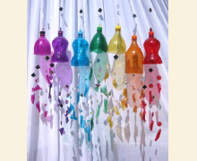
環保寶特瓶燈籠
寶特瓶的使用充斥在現代人的日常生活中，隨著環保意識抬頭，如何有效利用這些寶特瓶是我們應該關注的議題。這次在2020桃園燈會手作提燈館，就有機會讓這些寶特瓶展現新面貌，透過切割剪裁與素材加工，端看製作者的創意與心思，一個個平凡的寶特瓶，都有可能變身成為可愛精緻的燈籠。來參與課程，一定能有機會觸發廢物再利用的巧思！
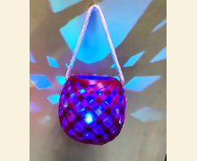
打包帶燈籠
打包帶普遍在拆卸後便丟棄，如何將這些打包帶反覆再利用，對於減緩環境污染絕對有助益。這次在2020桃園燈會手作提燈館，將有機會利用這些打包帶，透過傳統編織工藝，結合創新思維，製作出符合當代潮流的精巧單品。竹編的材料對於現代人而言取得相對不易，如果可以好好善用這些打包帶，隨時都能享受竹編工藝。只要來參與這次的課程，獲得的將不僅是一只燈籠，而是永遠實用的生活技藝！
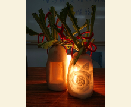
蔬果燈籠
日常食用的蘿蔔與瓜類蔬果由於外皮較為堅硬，相當適合作為雕刻的素材。這次在2020桃園燈會手作提燈館，將可以利用這些蔬果雕刻出一盞盞創意十足的燈籠，取出的果肉甚至還能加以烹調食用，可謂「有吃又有拿」，相當經濟實惠！只要跟隨授課老師的指引，即便沒有一雙善於雕刻的巧手，循序漸進細心刻畫與加工，人人都能製作出屬於自己的創意燈籠！